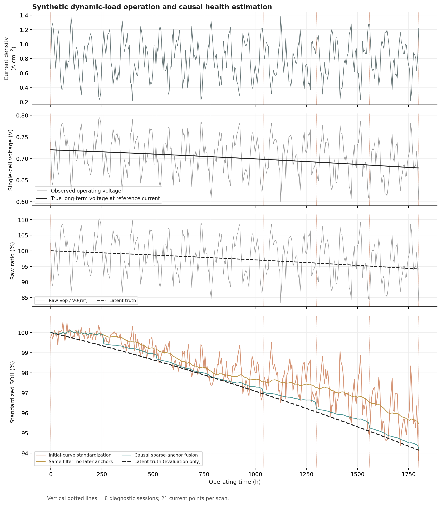
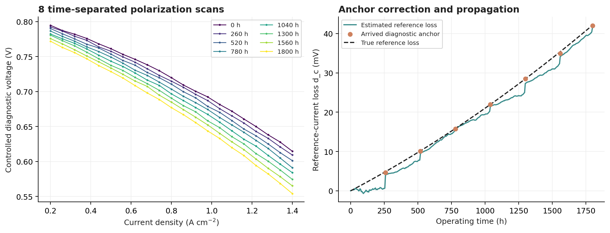
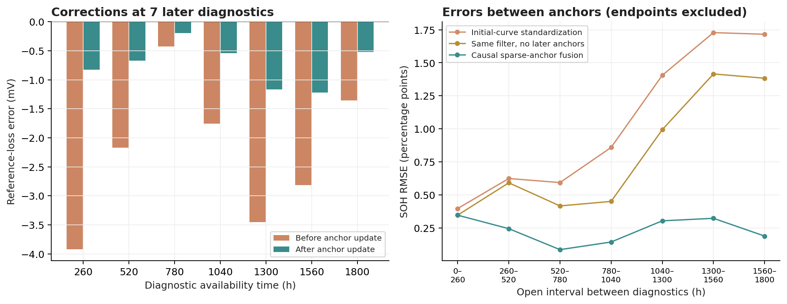

燃料电池健康评估与预测：运行结果
demo2_sparse_diagnostic_anchors
这是模拟数据演示。图、CSV 和指标来自已执行的代码；不代表 FC1 或 RealHyFC 实测性能。重新运行模型后，执行 python build_report.py 可刷新此报告。
结果图



本次运行说明
Demo 2：稀疏诊断锚点校准——本次运行结果
全部数据为固定随机种子的模拟数据，不是 FC1 或 RealHyFC 实测结果。
- 运行得到的初始参考电压：0.720191 V / 单电池。
- 初始诊断仅用于建立基准；在线使用后续锚点：7 次。
- 8 次诊断表示 8 个不同时间的极化扫描，每次扫描 21 个电流密度点。
- 推断不读取 truth 文件；未来诊断不会反向修正过去的在线结果。
SOH 误差（单位：百分点 pp）
| 方法 | 全部样本 RMSE | 非诊断样本 RMSE | 非诊断样本 MAE |
|---|---|---|---|
| 原始电压直接相除 | 5.9465 | 5.9045 | 4.9308 |
| 初始曲线+温度标准化 | 1.1491 | 1.1598 | 0.8762 |
| 相同滤波器、无后续锚点 | 0.8993 | 0.8994 | 0.7784 |
| 因果稀疏锚点融合 | 0.2486 | 0.2509 | 0.2166 |
7 次后续锚点的参考损失估计 RMSE：更新前 2.536 mV，更新后 0.808 mV。
这只描述模拟数据中的即时校正效果；interval_metrics.csv 单独报告锚点之间、且排除两端诊断时刻的误差。
最后一次 1800 h 诊断只影响其到达及之后的样本，不给此前区间带来改善。
可重复性与检查
自动检查：9 / 9 通过。详见 checks.json。
如何解读
1. 原始比值受负载影响，不能直接当作固定参考工况下的健康度。
2. 仅用初始极化曲线和已校准温度系数，可以去掉大部分可解释工况效应；它不能自动知道老化斜率变化与未建模偏差。
3. 无后续锚点的滤波器与融合滤波器完全同型、同参；区别仅是后续诊断是否到达并被吸收。这是主要消融对照。
4. 锚点提供参考损失与斜率信息，帮助区分长期退化和慢变偏差；两个锚点之间仍依赖状态演化假设。
5. 本例不证明某种网络无法训练，也不证明八次体检对所有电堆足够。复杂模型能否识别，需要数据量、先验与独立验证共同判断。
6. 当前 demo 给出在线 SOH，不给出经过验证的 RUL；协方差仅为模型内部不确定度，不是经覆盖率验证的置信区间。
输出文件
predictions.csv：四种方法在线 SOH。state_estimates.csv：长期损失、斜率、慢变偏差和模型内部标准差。anchor_updates.csv：每次后续诊断的更新前后值。interval_metrics.csv：锚点之间的误差，排除两个端点。- 三组 PNG / SVG：动态工况与健康度、诊断扫描与损失、更新及区间误差。
metrics.json、model_metadata.json、checks.json、environment.json：机器可读运行记录。
指标与事件记录
保留 CSV 原字段与精度；横向滚动可查看完整列。
anchor_updates.csv
| session_id | time_h | diagnostic_dc_v | diagnostic_dr_ohm_cm2 | dc_before_update_v | dc_after_update_v | dr_before_update_ohm_cm2 | dr_after_update_ohm_cm2 | bias_before_update_v | bias_after_update_v | true_dc_v | true_dr_ohm_cm2 | dc_error_before_mv | dc_error_after_mv |
|---|---|---|---|---|---|---|---|---|---|---|---|---|---|
| D01 | 260 | 0.004650446205 | 0.003499598149 | 0.0009638678455 | 0.004054580107 | 0.002558182283 | 0.003177246959 | -0.0001001115823 | 0.002111910073 | 0.0048828 | 0.003241732866 | -3.918932154 | -0.8282198929 |
| D02 | 520 | 0.0100832403 | 0.007969977416 | 0.008002918852 | 0.009503850868 | 0.004503365495 | 0.005783960529 | 0.002122040655 | 0.003238123574 | 0.0101712 | 0.007193855648 | -2.168281148 | -0.6673491322 |
| D03 | 780 | 0.01576894033 | 0.01155520974 | 0.01543868839 | 0.01566688817 | 0.007701667956 | 0.009040257848 | 0.002445907147 | 0.002617324934 | 0.0158652 | 0.01146744503 | -0.4265116093 | -0.1983118343 |
| D04 | 1040 | 0.02200445719 | 0.01644948267 | 0.02020958151 | 0.02142212441 | 0.01138391617 | 0.01311345234 | 0.003279037386 | 0.004232363566 | 0.0219648 | 0.01596416523 | -1.755218486 | -0.5426755946 |
| D05 | 1300 | 0.02848269696 | 0.0218716547 | 0.02501791112 | 0.02730691581 | 0.01495970901 | 0.01713871774 | 0.005894851706 | 0.007601762684 | 0.02847 | 0.020634442 | -3.452088876 | -1.163084186 |
| D06 | 1560 | 0.03493775324 | 0.02624745003 | 0.03256512101 | 0.03416312435 | 0.01963699043 | 0.02199248269 | 0.008051244763 | 0.009391641814 | 0.0353808 | 0.02544785385 | -2.815678986 | -1.217675655 |
| D07 | 1800 | 0.04200496056 | 0.03117120023 | 0.04076428197 | 0.04159767613 | 0.02401852104 | 0.02665445313 | 0.008758875741 | 0.009379118677 | 0.04212 | 0.03 | -1.355718034 | -0.5223238724 |
interval_metrics.csv
| start_anchor_h | next_anchor_h | method | rmse_percentage_points | mae_percentage_points | mean_error_percentage_points | samples |
|---|---|---|---|---|---|---|
| 0 | 260 | raw_ratio | 5.923170057 | 4.878273705 | 0.0944376913 | 51 |
| 0 | 260 | initial_curve_standardized_soh | 0.3963324554 | 0.3293892912 | 0.2733632576 | 51 |
| 0 | 260 | kalman_without_anchors_soh | 0.3462096649 | 0.2980482522 | 0.2977777215 | 51 |
| 0 | 260 | anchor_fusion_soh | 0.3462096649 | 0.2980482522 | 0.2977777215 | 51 |
| 260 | 520 | raw_ratio | 5.616393445 | 4.921109691 | 0.1481850953 | 51 |
| 260 | 520 | initial_curve_standardized_soh | 0.6239145152 | 0.5449726635 | 0.5428163647 | 51 |
| 260 | 520 | kalman_without_anchors_soh | 0.5912800602 | 0.5894829768 | 0.5894829768 | 51 |
| 260 | 520 | anchor_fusion_soh | 0.2439953106 | 0.2379781863 | 0.2379781863 | 51 |
| 520 | 780 | raw_ratio | 5.507984976 | 4.452511022 | -0.02190980221 | 51 |
| 520 | 780 | initial_curve_standardized_soh | 0.5929543978 | 0.4535049294 | 0.4118767994 | 51 |
| 520 | 780 | kalman_without_anchors_soh | 0.4162675879 | 0.4063582969 | 0.4063582969 | 51 |
| 520 | 780 | anchor_fusion_soh | 0.08533073442 | 0.08224289969 | 0.08224289969 | 51 |
| 780 | 1040 | raw_ratio | 6.202890935 | 5.384116546 | 0.2168577668 | 51 |
| 780 | 1040 | initial_curve_standardized_soh | 0.8590998942 | 0.6822480205 | 0.591026258 | 51 |
| 780 | 1040 | kalman_without_anchors_soh | 0.4505126161 | 0.4316381953 | 0.4316381953 | 51 |
| 780 | 1040 | anchor_fusion_soh | 0.1430875314 | 0.1206952 | 0.1206952 | 51 |
| 1040 | 1300 | raw_ratio | 5.7911106 | 4.87593444 | 1.777364932 | 51 |
| 1040 | 1300 | initial_curve_standardized_soh | 1.405304341 | 1.232978919 | 1.227364923 | 51 |
| 1040 | 1300 | kalman_without_anchors_soh | 0.9934760617 | 0.9765357666 | 0.9765357666 | 51 |
| 1040 | 1300 | anchor_fusion_soh | 0.303458345 | 0.2774143399 | 0.2774143399 | 51 |
| 1300 | 1560 | raw_ratio | 6.489377024 | 5.294408679 | 1.229861625 | 51 |
| 1300 | 1560 | initial_curve_standardized_soh | 1.728211837 | 1.482227224 | 1.477865976 | 51 |
| 1300 | 1560 | kalman_without_anchors_soh | 1.415268338 | 1.412135286 | 1.412135286 | 51 |
| 1300 | 1560 | anchor_fusion_soh | 0.3225420916 | 0.311077197 | 0.311077197 | 51 |
| 1560 | 1800 | raw_ratio | 5.726160096 | 4.690018063 | 1.316913399 | 47 |
| 1560 | 1800 | initial_curve_standardized_soh | 1.715803884 | 1.453675718 | 1.431999138 | 47 |
| 1560 | 1800 | kalman_without_anchors_soh | 1.383142221 | 1.381717709 | 1.381717709 | 47 |
| 1560 | 1800 | anchor_fusion_soh | 0.1879922515 | 0.1866696005 | 0.1866696005 | 47 |
全部结果文件
- 01_dynamic_load_and_health.png
- 01_dynamic_load_and_health.svg
- 02_diagnostic_scans_and_loss.png
- 02_diagnostic_scans_and_loss.svg
- 03_anchor_updates_and_interval_error.png
- 03_anchor_updates_and_interval_error.svg
- RESULTS.md
- anchor_updates.csv
- checks.json
- environment.json
- evaluation_with_truth.csv
- interval_metrics.csv
- metrics.json
- model_metadata.json
- predictions.csv
- run_log.txt
- state_estimates.csv


HTML 生成时间：2026-10-29 16:04（北京时间）。页面不需要联网，结果图可点击打开原图。